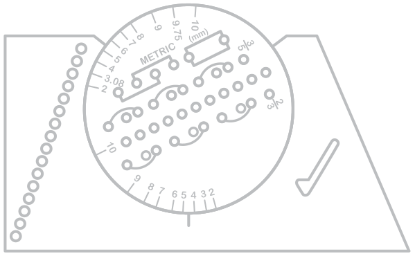
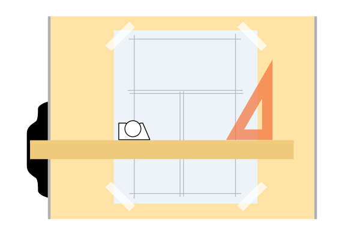
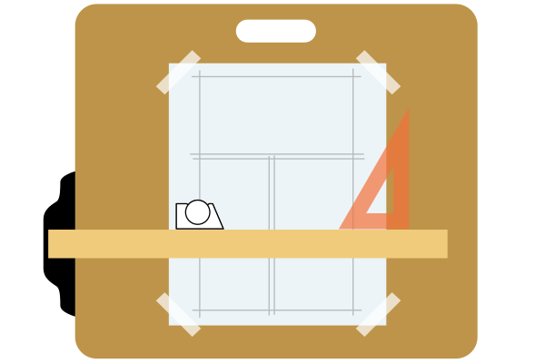
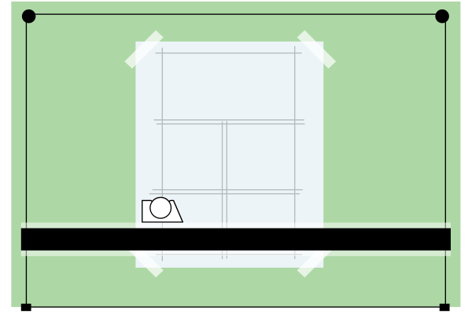
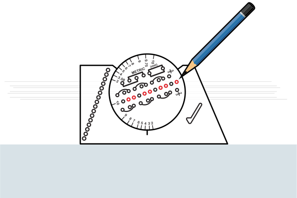
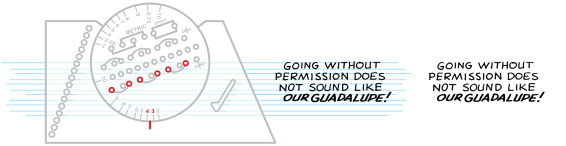
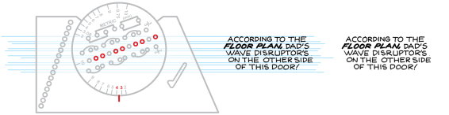
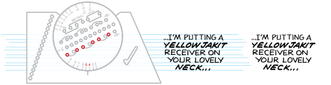

The Ames Lettering Guide is widely recognized as the original lettering guide. Its design hasn't changed since its invention in 1917. Used for drawing lettering guidelines, this drafting tool features both metric and fractional calibrations. After mastering the Guide, the next step is using calligraphy nibs to letter your comics.

A B C D E F G HTerminology
There is no consistent, objective labelling system for the Guide's elements. Below is my best attempt, merging the 1917 instructions with conservative naming conventions.
A Two-Thirds Ratio
Also known as the Reinhardt System, lowercase letters are 2/3 of uppercase letters
B Equal-Spaced Ratio
Designed for uppercase characters, cross-sectioning, fractions and four-guideline upper-and-lowercase characters.
C Three-Fifths Ratio
Used by civil engineers, lowercase letters are 3/5 of uppercase letters
D Disc Number
Numbers 10 — 2 denote the height of letters in thirty-seconds of an inch. If 1/4" high letters are needed, rotate the disc so that the 8 is at the frame index mark (8/32" = 1/4").
E Frame Index Mark
Indicator for defining character height with Disc Numbers
F Metric System
Not used in mainstream American comics
G Slope Lines Guide
The 68-degree diagonal right side. Flip the Ames guide over to use as a guide for the "slope" of italic characters.
H One Eighth Holes
Draftsman tool for title blocks, grid lines, section lining and dimension line spacing. In other words, useless for comic book lettering.
Setup
Tape your paper on the optional drawing surfaces:




Ames settings are the combination of Ratio and Scale. Ratios are defined above in items A, B and C of "Terms". Scale is set by rotating the disc to align a Disc Number to the Frame Index Mark. To begin, set your Ames guide to a 3.5 Scale (place the Frame Index Mark between the "3" and "4" Disc Number) for standard comic lettering. Place pencil point in one of the holes marked, and while holding t-square with one hand, slide guide across paper with pencil point. Repeat with every marked hole (skipping unmarked holes), and you will have the guide lines for three rows of letters. See ratio/scale options below.
Two-Thirds Ratio at 3.5 Scale
Ames setting two-thirds/3.5 has been the standard for mainstream American comics 10" x 15" production art since 1967. (The Ames setting for older 12" x 18" production art is two-thirds/4.5). Prior to comic book usage, the Two-Thirds Ratio was orginally designed for upper and lowercase characters. In my opinion, there's too much "leading" between rows of uppercase text. In addition, keeping track of NOT using middle line can be difficult.
This example is lettered with a Speedball A-5 nib (bold words with a B-5).

Equal-Spaced Ratio at 3.5 Scale
The Equal-Spaced Ratio creates rows the exact same height as the Two-Thirds Ratio, with less leading and hassles.

Two-Thirds Ratio at 4.5 Scale
For mainstream American 10" x 15" production art, the 4.5 Scale is more suitable for younger readers. While the larger font is easier to read, it also limits the amount of text you can use per page.
